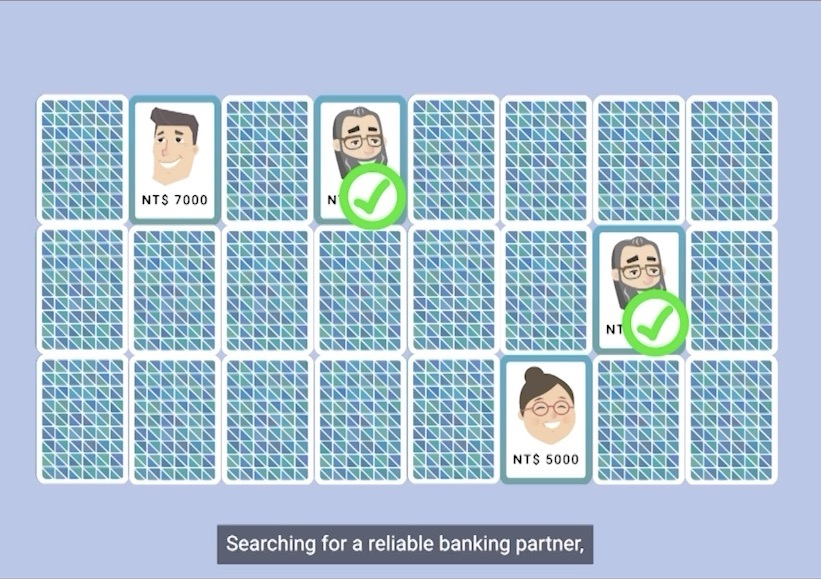
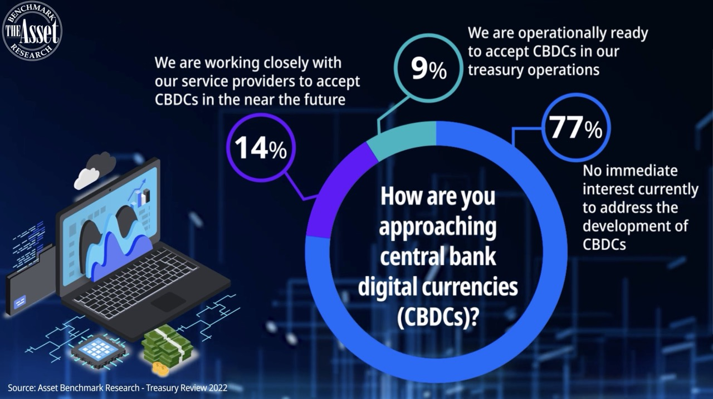

My Portfolio
Infographics for Reports

Which area of ESG would you favour when investing after Covid 19?
Infographics for Reports

Enhancing treasury operations for a new economy company
Animated Data Visualizations

Client Satisfaction Index Value Leaderboard
Infographics for Reports
What makes a great trade finance bank?
Infographics for Reports

How CFOs and treasurers are approaching technology today
Animated Data Visualizations

Examining the development of Asia's high-net-worth individuals population
Data Visualization Design

Appeal of Digital Assets by region
Data Visualization Design

GDP of Shenzhen 2018 - 2020